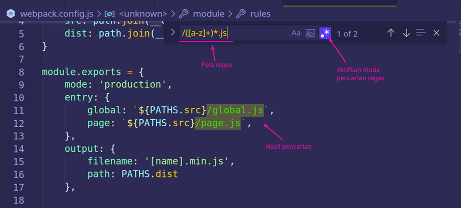
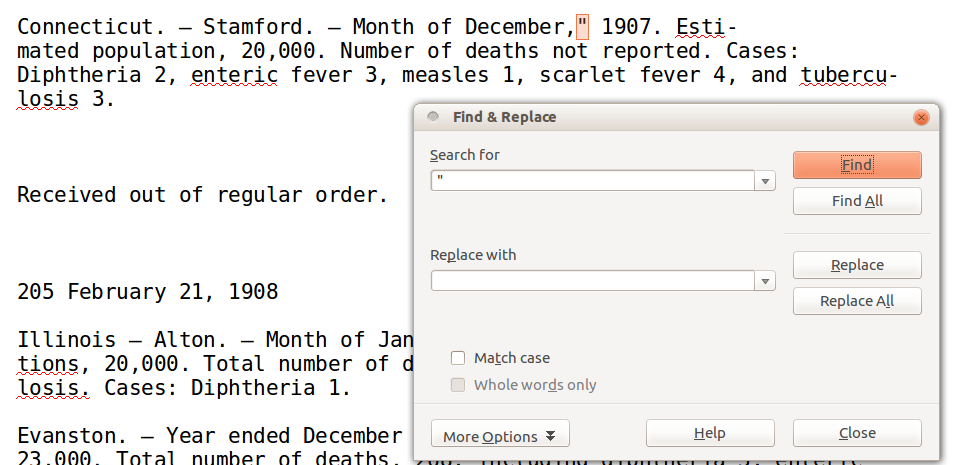
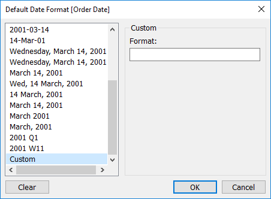
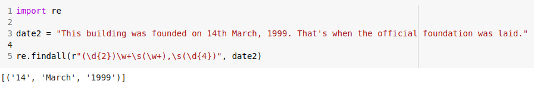

Teori Bahasa dan Otomata
Regular Expression (Regex) merupakan sebuah teks (string) yang mendefinisikan sebuah pola pencarian sehingga dapat membantu kita untuk melakukan matching (pencocokan), locate (pencarian), dan manipulasi teks.
Terkadang kita melihat pesan saat mencoba membuat akun di suatu situs yang mengatakan: "Kata sandi Anda harus memiliki setidaknya 8 karakter, setidaknya huruf besar, huruf kecil, angka, dan mungkin sebuah simbol sehingga Anda memastikan Anda tidak akan pernah mengingatnya di masa mendatang".
Maksud kalimat di atas adalah pola yang perlu Anda ikuti untuk memberikan kata sandi yang valid. Anda dapat menggunakan Ekspresi Reguler berikut:
Berikut cuplikan cepat untuk Anda uji:
let re = /^(?=.*[a-z])(?=.*[A-Z])(?=.*\d)(?=.*\W).{8,}$/g
let passwords = ["Fernando", "f3rn4", "F3rnand0!", "fernando123!"]
passwords.forEach( p => {
let matches = p.match(re)
if(!matches) console.log(p, "INVALID PASSWORD")
else console.log(p, "is a valid password!")
})
/*
Fernando INVALID PASSWORD
f3rn4 INVALID PASSWORD
F3rnand0! is a valid password!
fernando123! INVALID PASSWORD
*/
Pada dasarnya menggunakan sesuatu yang disebut "positive lookaheads" dan merupakan bagian dari ekspresi yang akan dicari mesin di dalam teks, di mana pun mereka berada. Segala sesuatu di dalam (? = ...) adalah bagian dari ekspresi yang kami pedulikan.
(? =. * [az]) |
akan cocok dengan semua karakter yang diikuti oleh huruf kecil |
(? =. * [AZ]) |
akan cocok jika karakter berikut adalah huruf kapital |
(? =. * \ d) |
akan cocok dengan apa pun yang diikuti dengan digit (angka) |
(? =. * \ W) |
cocok dengan semua karakter (selain baris baru) yang diikuti dengan simbol |
. {8,} |
pastikan panjang kecocokan setidaknya 8 karakter (karakter apa pun ditandai titik di sana) |
| ^ dan $ | pastikan kecocokan dimulai di awal kata (berkat tanda sisipan di awal ekspresi) dan diakhiri dengan kata (berkat tanda dolar). Pada dasarnya hanya kata yang cocok yang diperbolehkan. Kecocokan parsial tidak dipertimbangkan. |
Jika semua kondisi di atas terpenuhi, maka kecocokan dikembalikan, jika tidak maka tidak akan menjadi kata sandi yang valid.
Pola regex dimasukan dalam kata kunci, lalu dicocokan dengan database atau teks. Contohnya pada aplikasi Visual Studio Code terdapat mode pencarian dengan regex. Di sana kita bisa memasukan pola regex. Misal saya ingin mencari di mana saja penulisan nama file js dalam kode.
Kita dapat melihat beberapa kesalahan Optical Character Recognition (OCR), di mana perangkat lunak transkripsi otomatis Internet Archive lah membuat kesalahan, meskipun sebagian besar terlihat seperti transkripsi yang bagus. Ada dua tempat di mana OCR telah salah memasukkan tanda kutip ganda ke dalam file ini, dalam kedua kasus dengan meletakkannya di antara koma setelah bulan dan tahun empat digit, seperti berikut:
Kita dapat menemukannya dengan melakukan pencarian (Edit → Find dengan pintasan Ctrl+F atau Cmd+F di Mac) untuk tanda kutip ganda, dan konfirmasikan bahwa ini adalah dua contoh tanda kutip dalam file. Dalam hal ini kita dapat menghapusnya. Daripada melakukannya dengan tangan, hanya untuk latihan mencoba menggunakan LibreOffice menemukan-dan-mengganti fungsi (Ctrl+H atau Cmd+Alt+F pada Mac).
Ganti " dengan tidak ada apa-apa.
Ketika ada pesan "Format Email Tidak Valid" di suatu formulir pendaftaran, maka pada saat itu elemen input jenis "email" sudah melakukan validasi. Anda dapat menggunakan Ekspresi Reguler untuk memvalidasi format ini dalam satu baris kode, dari pada memiliki beberapa pernyataan IF yang berbeda.
Berikut Ekspresi Reguler untuk memeriksa alamat email:
Anda dapat mengidentifikasi ketiga bagian format yang diharapkan pada alamat email:
^ [a -zA-Z0-9.! # $% & '* + / =? ^ _ `{|} ~ -] + |
Memeriksa apakah nama pengguna valid, ini hanya memeriksa bahwa semua karakter yang valid sedang digunakan dan bahwa setidaknya satu dari mereka telah ditambahkan (itulah arti “+” di akhir) |
| @ [a-zA-Z0 -9 -] + | Memeriksa karakter @ dan nama host, dimana nama host harus alfanumerik dan memiliki setidaknya satu karakter |
| (?:\.[a-zA-Z0-9-]+)*$/ | Bagian ini bersifat opsional ditandai dengan * di akhir, menangani pemeriksaan TLD (Top Level Domain) atau pada dasarnya ekstensi nama domain. Itu berarti 0 atau lebih instance dari grup ini (grup tersebut dipisahkan oleh tanda kurung) diperlukan (jadi .com akan cocok, begitu juga .co.uk). |
Berikut cuplikan cepat untuk Anda uji:
let emailRE = /^[a-zA-Z0-9.!#$%&’*+/=?^_`{|}~-]+@[a-zA-Z0-9-]+(?:\.[a-zA-Z0-9-]+)*$/
let emails = ["fernando", "fernadno@", "fernando@test", "fernando@test.com", "valid_email123@host2.com", "a@1.com"]
emails.forEach( p => {
let matches = p.match(emailRE)
if(!matches) console.log(p, "INVALID EMAIL")
else console.log(p, "is a valid email!")
})
/*
fernando INVALID EMAIL
fernadno@ INVALID EMAIL
fernando@test is a valid email!
fernando@test.com is a valid email!
valid_email123@host2.com is a valid email!
a@1.com is a valid email!
*/
Sebagian besar data dunia nyata memiliki semacam kolom Tanggal atau Waktu yang terkait dengannya. Kolom seperti itu membawa informasi yang berguna untuk model, tetapi karena Tanggal dan Waktu memiliki beberapa format yang tersedia, menjadi sulit untuk bekerja dengan data tersebut.
Misalkan Anda memiliki nilai Date-Time seperti ini:
Mari kita ekstrak "Tahun" dari tanggal. Kita cukup menggunakan regex untuk menemukan pola di mana 4 digit muncul bersamaan:
Kode di atas akan langsung memberi Anda tahun dari tanggal. Demikian pula, Anda dapat mengekstrak informasi bulan dan hari sekaligus.
Anda dapat melakukan hal yang sama untuk mengekstrak info waktu seperti jam, menit dan detik. Kemudian bagaimana jika Anda memiliki tanggal seperti format berikut?
Anda hanya perlu memperbarui kode Regex di atas. Dalam hal ini, alih-alih memiliki semua angka dalam format tanggal, kami sekarang memiliki beberapa teks di antaranya. Kami juga memiliki beberapa spasi ekstra yang dapat dicocokkan menggunakan operator \s dan cara untuk menangkap digitnya akan sama seperti contoh sebelumnya.
Anda juga dapat membuat Regex untuk berbagai format Date-Time dan setelah regex Anda siap, Anda dapat menjalankan kode menggunakan loop atau menerapkan fungsi dalam panda di atas kolom kumpulan data Anda.
Doglio, Fernando. 2019. 4 Practical Use Cases for Regular Expressions. Bits and Pieces: https://bit.ly/2VViZiG.
Knox, Doug. 2013. Understanding Regular Expressions. The Programming Historian: https://bit.ly/37RNjQC.
Muhardian, Ahmad. 2020. Apa itu Regex? Dan Apa Manfaatnya dalam Pemrograman?. Petani Kode: https://bit.ly/37xJosg.
Rizki, Mohd Sanad Zaki. 2010. 4 Applications of Regular Expressions that every Data Scientist should know (with Python code)!. Analytics Vidhya: https://bit.ly/3qzUSUV.